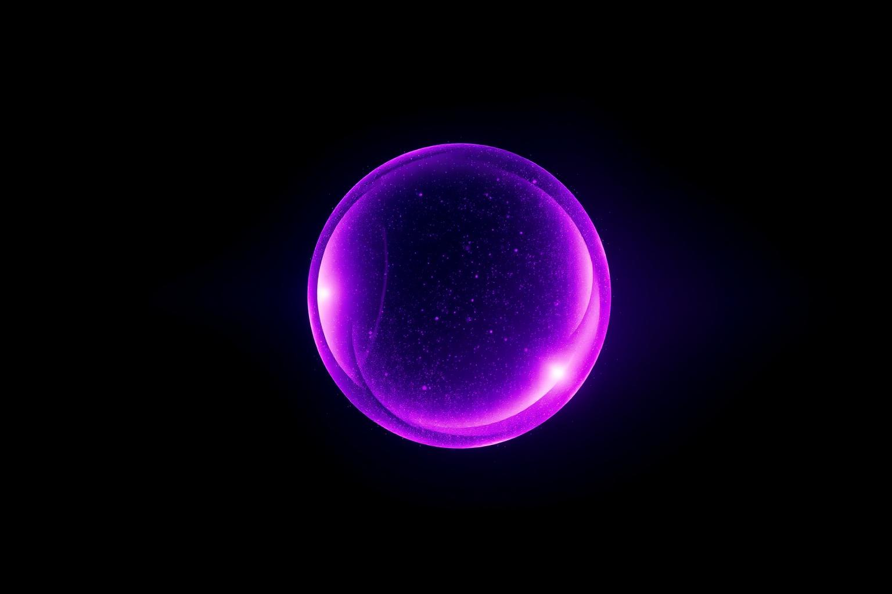
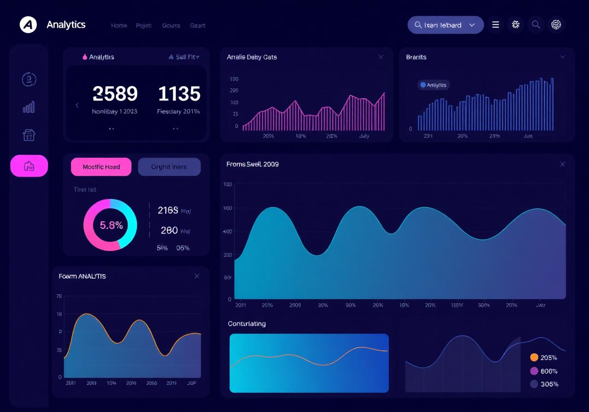

Intelligent Automation
for Modern Businesses
Orbit Services brings intelligent automation solutions to your business — helping you streamline operations, reduce manual work, and scale faster with confidence.
Over 50+ businesses trust us
Helping businesses grow through automation
We design and ship systems that remove friction from your operations — connecting tools, automating repetitive work, and turning data into decisions.
- End-to-end automation tailored to your stack
- Modern, conversion-focused web platforms
- Reliable technical systems built to scale


A senior team building technical systems that compound
Orbit Services is a focused engineering team that partners with operations, marketing, and product leaders to ship automation, dashboards, and platforms that deliver measurable outcomes.
What makes us stand out
We combine senior engineering with product thinking — shipping systems that are maintainable, observable, and built for compounding leverage.
Automation-first
We approach every project asking what should be automated, not just built.
Clean engineering
Readable, scalable codebases — never throwaway templates.
Outcome focused
Dashboards and metrics so you see the ROI of every system shipped.
Manual vs Automation
The difference is not a feature — it's an operating model.
Manual operations
- Hours lost on repetitive tasks
- Inconsistent data across tools
- Slow follow-ups & missed leads
- Scaling means hiring
With Orbit automation
- Workflows run 24/7 without intervention
- Single source of truth across stack
- Instant follow-ups & qualified pipelines
- Scaling means deploying systems
Ready to automate what matters?
Let's map your most expensive workflows and ship a system that runs them for you.